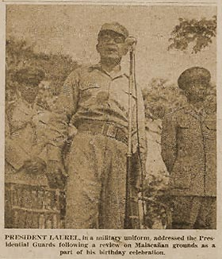

|
j
a v a s c r i p t |
March 10, 1944
It's been quiet since Truk and the Marianas — the calm before the storm, we hope. The Berlin bombing hardly made any impact here. The Admiralty landings drew a ripple of excitement and was forgotten in two days. People's expectations are such that only an invasion of France or the Philippines would excite them. The Japanese are preparing like mad for the latter.

Laurel Dressed for War
Tribune: "Nippon Army Prepared — Saito." The Japanese definitely intend to hold on to the Philippines. Ships have been arriving like mad for a while now. We have a new naval base in Cebu, new airfields all over the islands, new barracks, more soldiers, much supplies.... There's a terrific demand for skilled and unskilled workers, as well as housing for the Japanese. Laurel created a HOUSING BODY to help secure quarters for them — and it's got a lot of locals worried. Leaflets dropped over Manila commemorating the Japanese victory at Mukden caused quite a stir in our area. Kids thought the Americans dropped them. La Vanguardia talked about Japanese reinforcements in Bougainville initiating a "general offensive." The News is that the third daylight raid in four days over Berlin met little air opposition. |
|
|
|
|